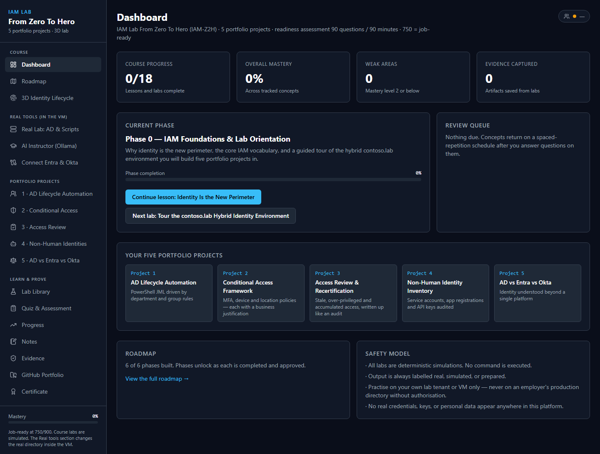
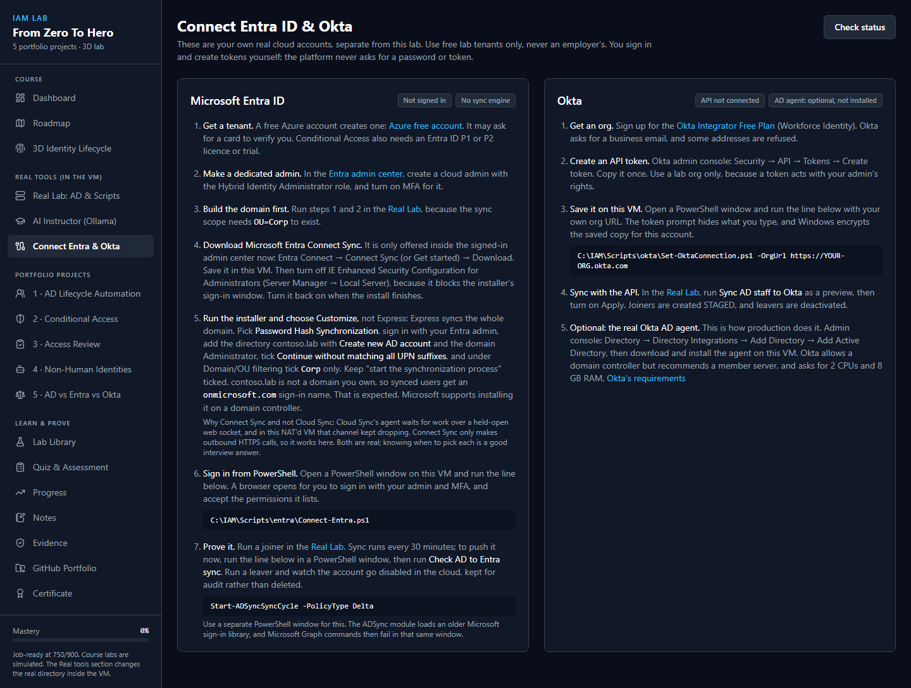
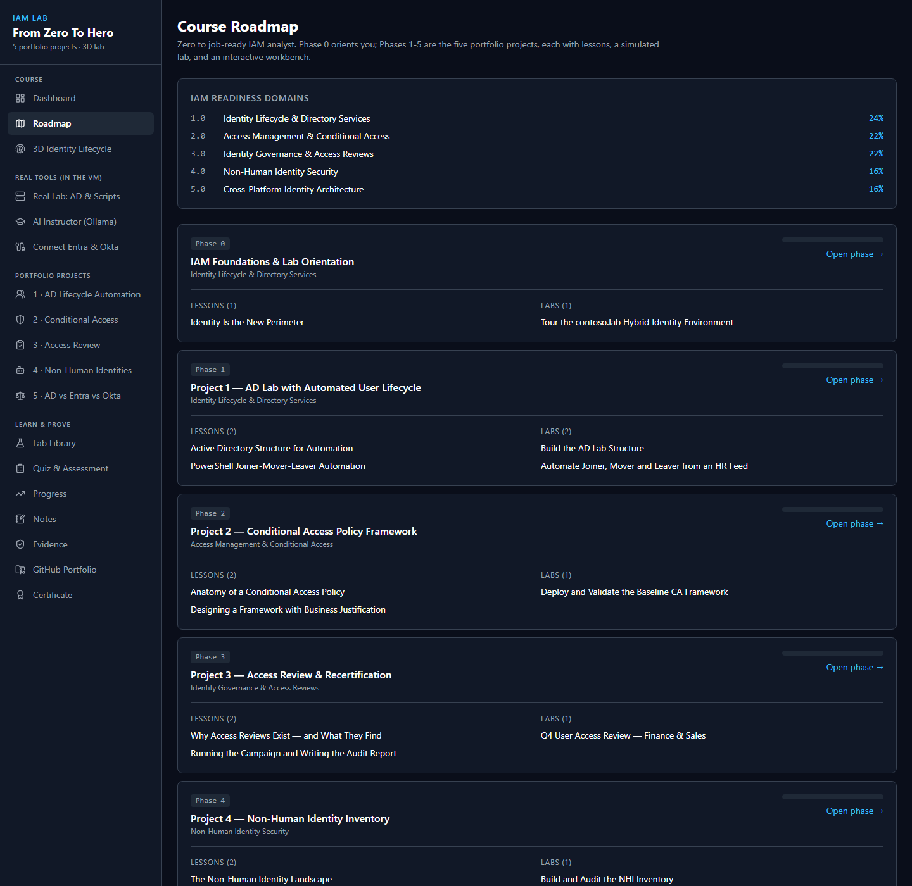
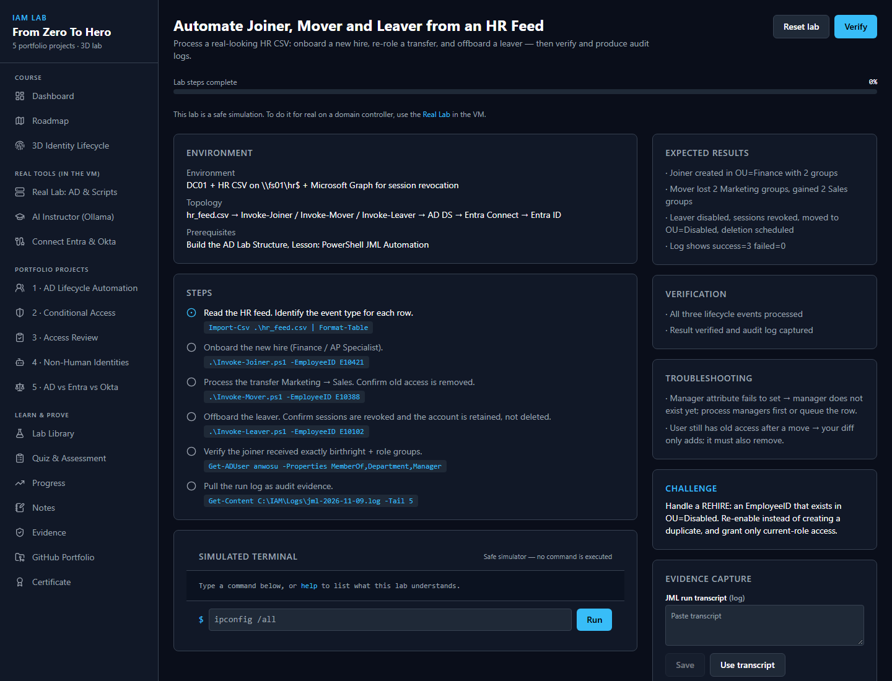
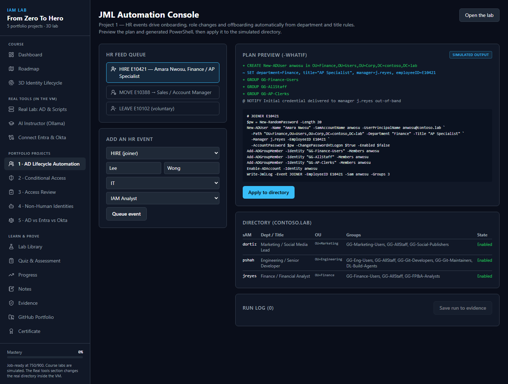
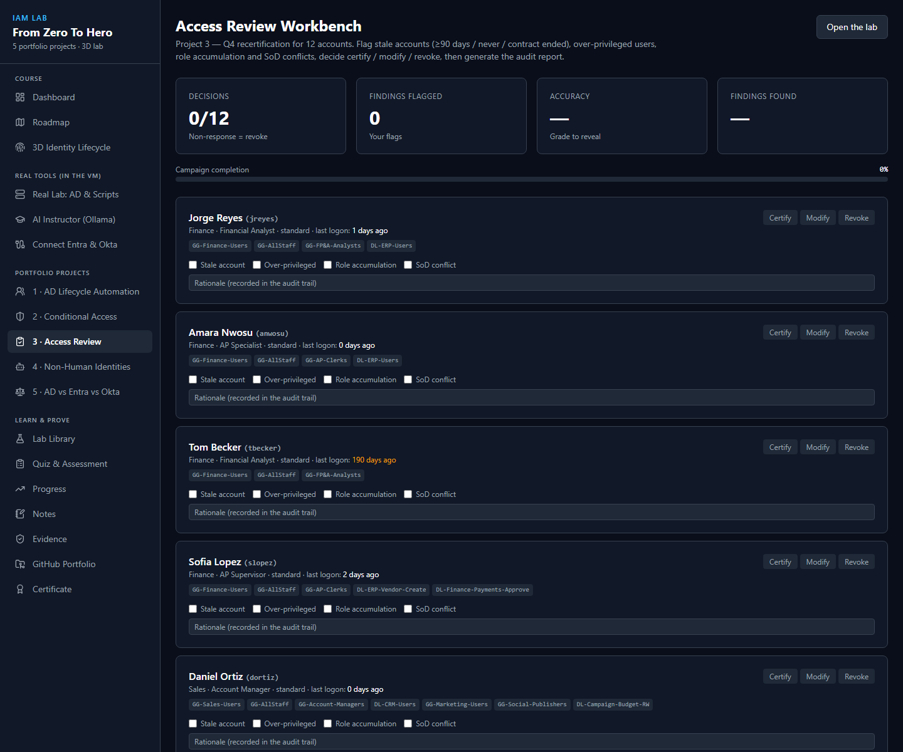
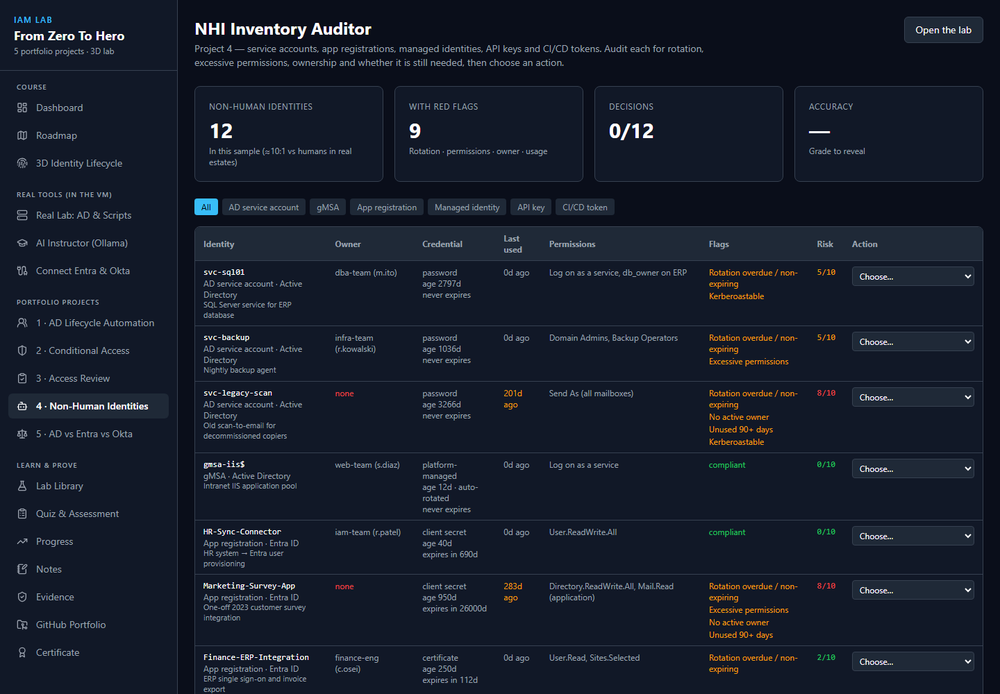
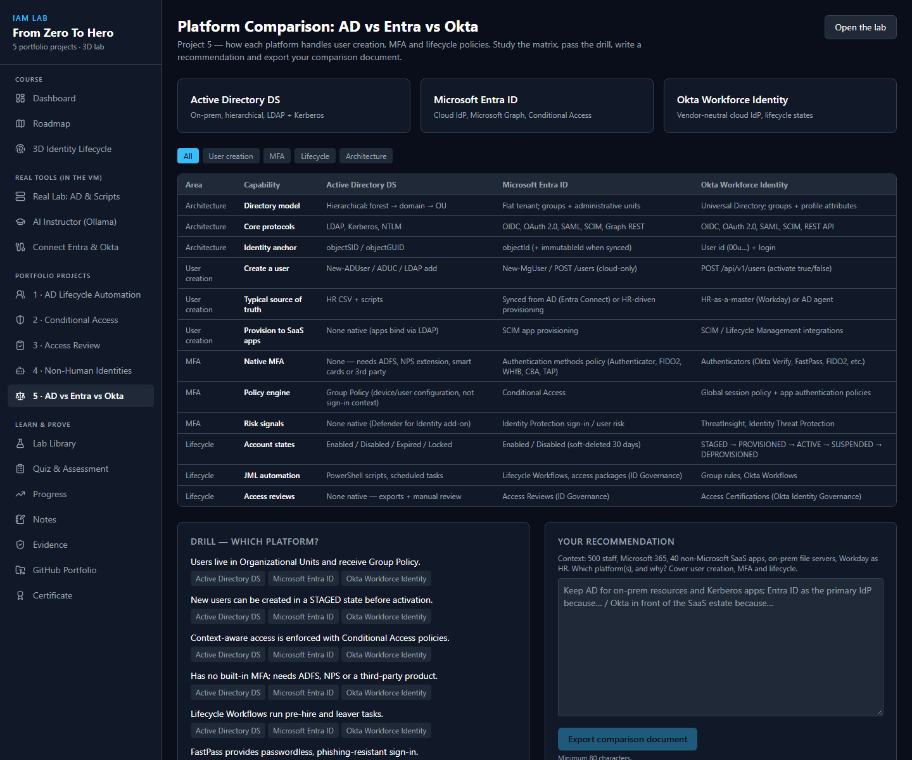
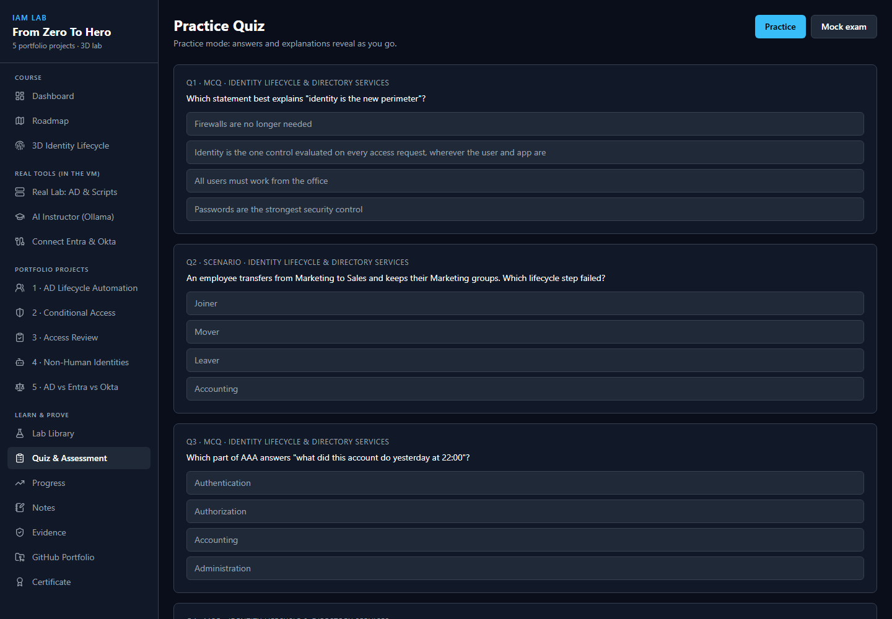
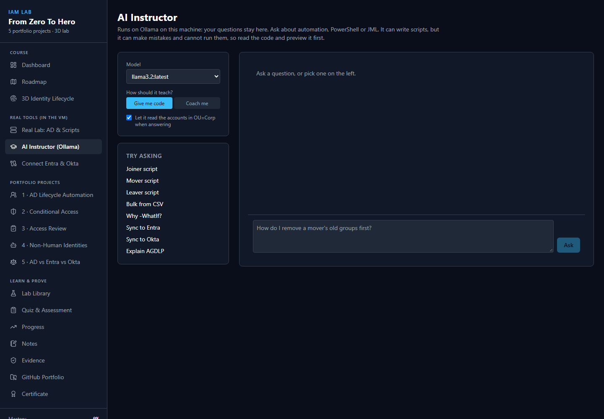

From an empty PC to a working Identity & Access Management lab: a real Active Directory domain, synced to your own Entra ID tenant and your own Okta org, with an AI instructor, five portfolio projects (Phase 0 to Phase 5), and a one-click start.
What you are building
Your PC (Windows 10/11)
├── Desktop icons: "Start IAM Lab" / "Stop IAM Lab"
└── VirtualBox VM: IAMZ2H-DC01 (Windows Server 2022, internet through NAT)
├── Real Active Directory: contoso.lab, ADUC, DNS, PowerShell
├── IAM Lab platform: http://localhost:8080 (inside the VM only)
├── Lab scripts: C:\IAM\Scripts (audit logs in C:\IAM\Logs)
├── Ollama + llama3.2: the AI Instructor (no GPU needed)
├── Microsoft Entra Connect Sync ──► your Entra ID tenant
└── Okta REST API (token) ──► your Okta orgTwo kinds of activity, always labelled on screen:
| Label | Meaning |
|---|---|
| Simulated output | Lessons, course labs and workbenches. Nothing is executed. Works anywhere. |
| Real tool output | The Real Lab page. Scripts really change Active Directory in the VM, and (through sync and APIs) your own Entra tenant and Okta org. |
Part A — Install the lab (once, about 1–2 hours)
A1. Check your PC
| Need | Minimum |
|---|---|
| Windows | Windows 10 or 11 (Home is fine) |
| Memory | 14 GB RAM or more (the VM uses 10 GB) |
| Disk | 60 GB free |
| CPU | Virtualisation enabled in the BIOS/UEFI |
| Internet | Needed during the build (downloads Node.js, Microsoft Graph PowerShell, Ollama and a 2 GB AI model) |
A2. Install VirtualBox
- Download VirtualBox 7 for Windows hosts from virtualbox.org.
- Run the installer with the default options.
A3. Download Windows Server 2022 (free evaluation)
- Go to the Microsoft Evaluation Center and download the ISO (English, 64-bit).
- Save it exactly here (create the folders if needed):
C:\Users\<you>\Downloads\ADLab-ISOs\WindowsServer2022-Eval.isoThe evaluation is free for 180 days.
A4. Get the project
Download or clone the project folder, for example to Documents\IAM_LAB_From_ZERO_To_HERO. Everything below runs from that folder. The code repository is private for now: ask the author for access through the contact form on the landing page.
A5. Build the VM (one command)
Open PowerShell on your PC, go to the project folder, and run:
powershell -ExecutionPolicy Bypass -File .\vm-kit\Build-Lab.ps1What happens (you can watch the VirtualBox window, but do not type in it):
- Creates the VM
IAMZ2H-DC01(2 CPUs, 10 GB RAM, 120 GB disk) and installs Windows Server unattended. - Promotes it to a domain controller for contoso.lab and restarts.
- Installs Node.js, Microsoft Graph PowerShell and Ollama with the
llama3.2model. - Installs the IAM Lab platform and sets it to start automatically.
- Saves a restore point called Clean-Start.
It takes an hour or more. It can be re-run safely: if your internet drops, run the same command again and finished steps are skipped. Add -SkipOllama to leave out the AI instructor.
A6. Get the VM password
The VM's Administrator password is generated during the build and stored encrypted for your Windows account. Show it with:
powershell -ExecutionPolicy Bypass -File .\vm-kit\Show-LabPassword.ps1A7. Put the one-click icons on your desktop
powershell -ExecutionPolicy Bypass -File .\vm-kit\Install-LabShortcuts.ps1Created 'Start IAM Lab' on the desktop and in Start > IAM Lab
Created 'Stop IAM Lab' on the desktop and in Start > IAM LabFrom now on you never need to type a command to start or stop the lab.
Part B — Daily use: one-click Start and Stop
Start
Double-click Start IAM Lab on your desktop. A small window shows progress (real output):
[22:18:35] VM IAMZ2H-DC01 is running
[22:18:35] Waiting for Windows in the VM (a few minutes after a cold start)
[22:18:51] Windows is up (DC01)
[22:18:51] Waiting for the IAM Lab platform, Active Directory and the sync engine
[22:19:01] Status: platform=True exec=True ad=True sync=Running
The lab is ready.
1. Go to the VirtualBox window 'IAMZ2H-DC01'.
2. Sign in as CONTOSO\Administrator (password: vm-kit\Show-LabPassword.ps1).
3. The IAM Lab opens by itself. If not, double-click 'IAM Lab' on the VM desktop.
When you are done, use 'Stop IAM Lab' so the domain controller shuts down cleanly.From a cold start this takes about 3–5 minutes. Clicking it while the lab is already running is safe: it only checks.
Inside the VM you also have desktop icons for IAM Lab, AD Users and Computers, Lab PowerShell (opens in C:\IAM\Scripts) and Entra Admin Center.
Stop
Double-click Stop IAM Lab. It asks Windows in the VM to shut down properly.
The platform

The left menu has four groups:
| Group | Pages |
|---|---|
| Course | Dashboard, Roadmap, 3D Identity Lifecycle |
| Real tools (in the VM) | Real Lab, AI Instructor, Connect Entra & Okta |
| Portfolio projects | One workbench per project, 1 to 5 |
| Learn & prove | Lab Library, Quiz, Progress, Notes, Evidence, GitHub Portfolio, Certificate |
Part C — Connect your cloud accounts (once)
You can do Phases 0–5 with simulations only. Connecting your own Entra tenant and Okta org makes Phases 1, 3, 4 and 5 run for real across three platforms. Use free lab accounts only — never an employer's.
The Connect Entra & Okta page in the platform lists the same steps and shows live status badges:

C1. Build the domain first
The sync scope needs OU=Corp to exist. In the Real Lab, run steps 1 · Build AD (both buttons) before connecting Entra. See Phase 1.
C2. Entra ID tenant and admin
- Create a free tenant (a free Azure account creates one).
- In the Entra admin center, create a cloud admin for the lab and turn on MFA for it.
C3. Sign in from the VM
In the VM, open Lab PowerShell and run:
C:\IAM\Scripts\entra\Connect-Entra.ps1A browser opens; sign in with your lab admin and MFA and accept the permissions it lists. The script saves an encrypted sign-in for this VM account, so lab scripts can use Microsoft Graph without asking again.
C4. Install Microsoft Entra Connect Sync (AD → Entra)
- In the Entra admin center: Entra Connect → Connect Sync (or Get started) → Download. Save it in the VM.
- In the VM, turn IE Enhanced Security Configuration off for Administrators (Server Manager → Local Server). It blocks the installer's sign-in window. Turn it back on afterwards.
- Run the installer and choose Customize (not Express — Express syncs the whole domain):
- User sign-in: Password Hash Synchronization
- Connect to Microsoft Entra ID: sign in with your lab admin
- Connect your directories:
contoso.lab→ Add Directory → Create new AD account →CONTOSO\Administrator - Microsoft Entra sign-in: tick Continue without matching all UPN suffixes to verified domains
- Domain/OU filtering: Sync selected domains and OUs → untick everything → tick only Corp
- Keep Start the synchronization process ticked → Install
- Synced users appear as
name@<yourtenant>.onmicrosoft.com, becausecontoso.labis not a domain you own. That is expected.
Check it from the Real Lab with Check AD to Entra sync (real output):
Tenant: <your tenant> syncEnabled=True lastSync=11/10/2026 01:21:13
SYNCED mchen -> mchen@<tenant>.onmicrosoft.com cloudEnabled=True
SYNCED jreyes -> jreyes@<tenant>.onmicrosoft.com cloudEnabled=True
SYNCED pshah -> pshah@<tenant>.onmicrosoft.com cloudEnabled=False
...Sync runs every 30 minutes. To push it now, open a separate PowerShell window in the VM:
Start-ADSyncSyncCycle -PolicyType DeltaC5. Okta org and API token
- Sign up for the Okta Integrator Free Plan (Workforce Identity) at developer.okta.com/signup. Choose the role Other developers exploring APIs and SDKs.
- Okta refuses free email providers such as Gmail and Outlook.com. Use an address on a domain you own.
- In the Okta Admin Console (the address ending in
-admin.okta.com): Security → API → Tokens → Create token. Name itIAM-Lab-VM, keep Any IP, and copy it. It is shown only once. - In the VM, in Lab PowerShell, run with your org URL — the one without
-admin:
C:\IAM\Scripts\okta\Set-OktaConnection.ps1 -OrgUrl https://integrator-1234567.okta.com- Paste the token at the hidden prompt (right-click pastes). Success looks like:
Connected to Okta org: <your org name> (https://integrator-1234567.okta.com)The token is encrypted with Windows DPAPI for the VM's Administrator account and never passes through the web page.
Part D — The course, Phase 0 to Phase 5

Every phase follows the same loop: lesson → simulated lab → workbench → (real lab) → quiz → evidence.
- Lessons open from the Roadmap or the Dashboard's Continue lesson button.
- Simulated labs (Lab Library) have a safe terminal that only understands the lab's commands, an expected-results panel and evidence capture.
- Workbenches are interactive tools that export a report to your Evidence locker.
- Real Lab steps run on the real domain controller.

The Real Lab page

- Status tiles show Active Directory, the lab structure, Entra (and whether Connect Sync is running) and Okta, read live from the VM.
- Script catalog, grouped by phase. Scripts that change things have Preview (-WhatIf) — always preview first — and Run on real AD.
- Output streams the real PowerShell output. Save as evidence stores it; Ask the instructor sends it to the AI Instructor for an explanation.
- Your own script runs any PowerShell you paste. Risky patterns (deleting objects, downloads, encoded commands) need a tick to confirm, and code from the AI Instructor always needs the tick.
- Live directory lists the accounts in
OU=Corp.
Phase 0 — IAM Foundations & Lab Orientation
Goal: understand why identity is the new perimeter, the IAM vocabulary (AAA, JML, least privilege), and tour the hybrid contoso.lab environment.
- Dashboard → Continue lesson: Identity Is the New Perimeter.
- Open 3D Identity Lifecycle to see a person's journey from HR record to deprovisioning.
- Do the lab Tour the contoso.lab Hybrid Identity Environment.
- Take the Phase 0 quiz.
Phase 1 — AD Lab with Automated User Lifecycle
Goal: build an AD structure for automation and run real Joiner-Mover-Leaver (JML) from an HR feed, driven by department and group rules.
Workbench: 1 · AD Lifecycle Automation (JML Automation Console).

Real Lab steps, in order (preview each, then run):
| Step | Real Lab button | What it does |
|---|---|---|
| 1 | Build OUs, groups and AGDLP nesting | Creates OU=Corp, department OUs, GG-* global and DL-* domain-local groups, AGDLP nesting. Safe to re-run. |
| 2 | Create starting staff | Creates the managers plus the mover and leaver used by the HR feed |
| 3 | Joiner E10421 | Onboards Amara Nwosu (Finance, AP Specialist) |
| 4 | Mover E10388 | Moves Daniel Ortiz from Marketing to Sales: removes old access first, then grants new |
| 5 | Leaver E10102 | Offboards Priya Shah: disable, reset password, revoke cloud sessions, record and remove groups, move to OU=Disabled |
Real output of the three events:
[HIRE] E10421 run=8adc495c operations=5
OK Create
OK AddGroup GG-Finance-Users
OK AddGroup GG-AllStaff
OK AddGroup GG-AP-Clerks
OK Enable anwosu
VERIFIED from AD: sam=anwosu enabled=True ou=OU=Finance,OU=Users,OU=Corp,DC=contoso,DC=lab
[MOVE] E10388 run=4f354034 operations=6
OK RemoveGroup GG-Marketing-Users
OK RemoveGroup GG-Social-Publishers
OK Move OU=Sales,OU=Users,OU=Corp,DC=contoso,DC=lab
OK SetAttributes
OK AddGroup GG-Sales-Users
OK AddGroup GG-Account-Managers
[LEAVE] E10102 run=cab508fa operations=9
OK Disable pshah
OK ResetPassword pshah
OK RevokeCloudSessions pshah
OK RecordGroups GG-Git-Maintainers;GG-Git-Developers;GG-Eng-Users;GG-AllStaff
OK RemoveGroup GG-AllStaff
...
OK Move OU=Disabled,OU=Corp,DC=contoso,DC=lab
VERIFIED from AD: sam=pshah enabled=False ou=OU=Disabled,OU=Corp,DC=contoso,DC=labIf Entra and Okta are connected, finish the cross-platform loop:
- Push to Entra (separate PowerShell window):
Start-ADSyncSyncCycle -PolicyType Delta, then Check AD to Entra sync. The joiner appears, the mover's department changes, and the leaver showscloudEnabled=False— disabled and kept for audit, not deleted. - Sync AD staff to Okta: preview, then tick Apply. Real output:
AD accounts: 7 Okta users: 1 actions: 6
[+] created mchen@contoso.lab status=STAGED
[+] created anwosu@contoso.lab status=STAGED
...New Okta users are created STAGED (they exist but cannot sign in, and no activation email is sent). Leavers are deactivated.
Every run is written to the audit log C:\IAM\Logs\jml-<date>.log.
Phase 2 — Conditional Access Policy Framework
Goal: design an Entra ID Conditional Access framework (MFA, device compliance, location, risk) with a business justification for every policy, and test it with What If before enforcing anything.
Workbench: 2 · Conditional Access (Conditional Access Designer).

- For each policy, write a justification (40+ characters): what risk, what impact on users, what evidence, who owns it.
- Use What If to test personas, apps, locations, devices and sign-in risk.
- Read the Framework review, then Export framework document to Evidence.
Real deployment (optional, needs a licence). Conditional Access needs Entra ID P1 or P2 — even report-only. In the Real Lab, Deploy CA baseline always previews first and refuses to apply until all of these pass:
- a break-glass group (cloud-only security group) holding a separate Global Administrator emergency account;
- at least two Global Administrators;
- Security Defaults turned off (they cannot run together with Conditional Access);
- an active P1/P2 licence.
It creates CA000, CA001, CA004 and CA006 as report-only and CA002-Admins-RequireMFA as enforced, because once Security Defaults is off nothing else makes admins use MFA. Without a licence, do Phase 2 in the workbench and keep the guarded preview output as evidence.
Phase 3 — Access Review & Recertification
Goal: find stale accounts, over-privileged users, role accumulation and SoD conflicts, and document them like an audit.
Workbench: 3 · Access Review.

Real Lab: Find stale accounts and List privileged group members. New accounts get a 14-day grace period, so a new hire is not flagged on day one (real output):
Stale findings (no sign-in in 90 days, or never used after 14 days): 0
Not flagged: 5 new account(s) not signed in yet, still inside the 14-day grace period: mchen, klindqvist, jreyes, dortiz, anwosu.Save both outputs as evidence and write the findings into the workbench's audit report.
Phase 4 — Non-Human Identity Inventory
Goal: inventory service accounts, gMSAs, app registrations and API keys; audit rotation, permissions, ownership, and whether each is still needed.
Workbench: 4 · Non-Human Identities (NHI Inventory Auditor).

Real Lab: Non-human identity inventory reads AD SPN accounts, gMSAs and (if Entra is connected) app registrations with credential metadata. Real findings from a lab that tried Cloud Sync first and then switched:
== Group Managed Service Accounts
provAgentgMSA True <- left behind by the abandoned Cloud Sync agent: orphaned
ADSyncMSA48f2e True <- used by Connect Sync: keep
== Entra app registrations (credential metadata only)
contoso.lab owners=0 <- no owner: classic audit findingPhase 5 — Cross-Platform Comparison: AD vs Entra vs Okta
Goal: compare user creation, MFA and lifecycle across the three platforms, using the same people.
Workbench: 5 · AD vs Entra vs Okta.

With everything connected, one leaver reaches all three platforms (real result):
| Platform | After the leaver |
|---|---|
| AD | Disabled, in OU=Disabled, groups removed and recorded in the description |
| Entra ID | Disabled after sync; sessions revoked before the sync ran; kept for audit |
| Okta | DEPROVISIONED |
Use Check Okta connection to see each user's Okta lifecycle state (STAGED, ACTIVE, DEPROVISIONED).
Prove it: quiz, evidence and portfolio
| Page | Use it for |
|---|---|
| Quiz & Assessment | Phase quizzes and the 90-question readiness assessment (750/900 = job-ready) |
| Evidence | Everything you saved from labs, workbenches and real runs |
| GitHub Portfolio | Turns your evidence into project READMEs |
| Certificate | Completion certificate |

The AI Instructor

Runs on Ollama inside the VM; your questions stay there. Choose Give me code or Coach me, and optionally let it read the accounts in OU=Corp. Code it writes opens in the Real Lab's script box, where you must read it and tick the confirmation before it can run.
Part E — Start over and re-take the lab
You can redo Phases 1–5 as many times as you like without reconnecting Entra or Okta.
E1. Start over (recommended)
In the Real Lab, card 0 · Start over → Start over: clear the exercises:
- Click Run on real AD with Apply unticked to preview. Real preview output:
[START OVER] PREVIEW run=b918ff27 domain=contoso.lab
Okta: 6 lab user(s) to remove; your admin and other users are kept
[preview] remove mchen@contoso.lab (STAGED)
...
AD: remove OU=Corp,DC=contoso,DC=lab with 7 user(s), 22 group(s), 11 OU(s)
Entra: after the AD removal, Connect Sync deletes the synced copies (they stay in the recycle bin 30 days)
Preview only. Kept either way: Entra sign-in, Okta token, Connect Sync, Ollama, platform, audit logs.- Tick Apply and run it again. It takes under a minute. Real output:
[START OVER] APPLY run=a8fa1791 domain=contoso.lab
Okta: 6 lab user(s) to remove; your admin and other users are kept
[-] removed mchen@contoso.lab
...
AD: remove OU=Corp,DC=contoso,DC=lab with 7 user(s), 22 group(s), 11 OU(s)
[-] removed OU=Corp,DC=contoso,DC=lab
Entra: Connect Sync delta run started (exit 0); cloud copies disappear within a few minutes
Done. Kept: Entra sign-in, Okta token, Connect Sync, Ollama, platform, audit logs.When you rebuild, Connect Sync creates new Entra users with the same sign-in names. The old ones stay in the Entra recycle bin under renamed sign-in names (<id>name@...), so they never clash, and Entra purges them after 30 days.
| Removed | Kept |
|---|---|
OU=Corp and everything in it (staff, groups, OUs) | Your Entra sign-in and your Okta token |
The lab's Okta users (logins @contoso.lab) | Connect Sync and its settings |
| Their Entra copies (Connect Sync removes them; 30 days in the recycle bin) | Ollama, the platform, the audit logs |
Then start again at Phase 1 with Build OUs, groups and AGDLP nesting.
To also reset your course progress (lessons, quizzes, mastery), use Progress → Reset all progress. That only clears your browser's saved progress.
E2. Restore points (whole-VM rewind)
For a full rewind of the VM, run on your PC (not in the VM), from the project folder:
powershell -ExecutionPolicy Bypass -File .\vm-kit\Reset-Lab.ps1 -Snapshot <name>| Restore point | Holds |
|---|---|
Ready-Empty | Empty domain. No cloud connections or Connect Sync |
Clean-Start | What a fresh build saves |
A restore point keeps whatever was signed in when it was taken, but does not roll back Entra or Okta. Prefer Start over (E1) for re-takes; use restore points for repairs.
Save your own restore point once Entra and Okta are connected, so a repair never costs you the connections:
powershell -ExecutionPolicy Bypass -File .\vm-kit\Save-LabPoint.ps1 -Name ConnectedLater, Reset-Lab.ps1 -Snapshot Connected brings back a VM that is still connected.
E3. Keeping the connections alive
| Connection | Expires | Fix |
|---|---|---|
| Entra sign-in (Graph) | After about 90 days without use | Run Connect-Entra.ps1 again |
| Okta API token | After 30 days without use | Create a new token, run Set-OktaConnection.ps1 again |
| Windows Server evaluation | 180 days | Rebuild, or extend the evaluation |
Using the lab at least once a month keeps both cloud connections alive.
Part F — Troubleshooting
| Symptom | Cause | Fix |
|---|---|---|
| VM very slow | Windows hypervisor is on under VirtualBox | Your choice (WSL2/Docker need it): turn off Memory integrity, Virtual Machine Platform and Windows Hypervisor Platform, run bcdedit /set hypervisorlaunchtype off, restart |
| VM froze (clock stopped, no response) | Host overload | VirtualBox → Machine → Close → Power off, then Start IAM Lab. The kit uses 2 CPUs to reduce this |
vm-kit scripts fail with VERR_DUPLICATE or Closing guest session ... VERR_TIMEOUT | After many hours of uptime, VirtualBox's helper in the VM stops closing its sessions | Run vm-kit\Repair-LabGuestControl.ps1 on your PC, or restart the VM from its own Start menu |
| Start IAM Lab: "platform did not answer" | Platform task not started | Run vm-kit\Update-Platform.ps1 on your PC, click Start again |
| Real Lab tiles say "Checking…" for a while | The VM is still starting services | Wait a minute and click Refresh |
| Entra sign-in error 530035 | Security Defaults blocks the device-code sign-in | Use Connect-Entra.ps1 (browser sign-in), as in C3 |
| "You'll need the Internet" during sign-in | Windows thinks the DC has no internet | Use Connect-Entra.ps1, which avoids that sign-in window |
| Connect Sync installer sign-in window is blank or blocked | IE Enhanced Security Configuration | Turn it off for Administrators during the install, then back on |
RefreshCacheAsync ... does not have an implementation | ADSync and Microsoft Graph loaded in the same PowerShell window | Run ADSync commands in their own window |
| Okta signup refuses your email | Okta blocks free email providers | Use an address on a domain you own |
Okta is not connected | Token not saved in the VM | Run Set-OktaConnection.ps1 inside the VM (not on your PC) |
The argument '.\vm-kit\Reset-Lab.ps1' ... does not exist | Ran a PC script inside the VM | vm-kit\*.ps1 run on your PC; C:\IAM\Scripts\* run in the VM |
| CA deploy: "No active Entra ID P1 or P2 licence" | Trial expired or never started | Buy P1 for one user, or use an E5 trial; or keep Phase 2 simulated |
Part G — Safety rules
- The platform listens on
127.0.0.1inside the VM; nothing outside the VM can reach it. - Lab scripts refuse to run unless the domain is
contoso.lab, and refuse accounts outsideOU=Corpor protected admin accounts. - Scripts that change Entra or Okta preview unless you turn Apply on.
- Sign-ins and API tokens never pass through the web page; they are encrypted with Windows DPAPI for the VM's Administrator account.
- Scripts run as a domain admin because this is an isolated lab. Real automation should use a gMSA with only the rights it needs — the course teaches this.
- Use lab tenants only, never an employer's.